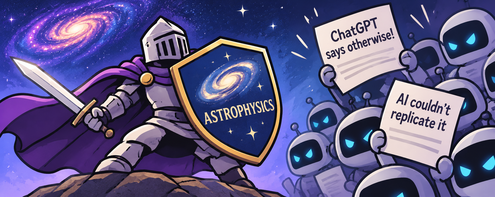
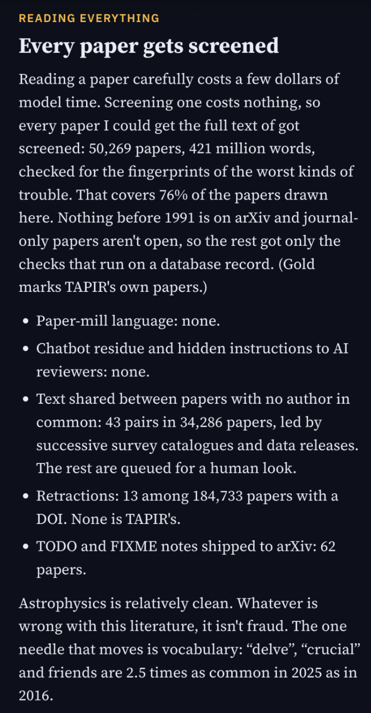
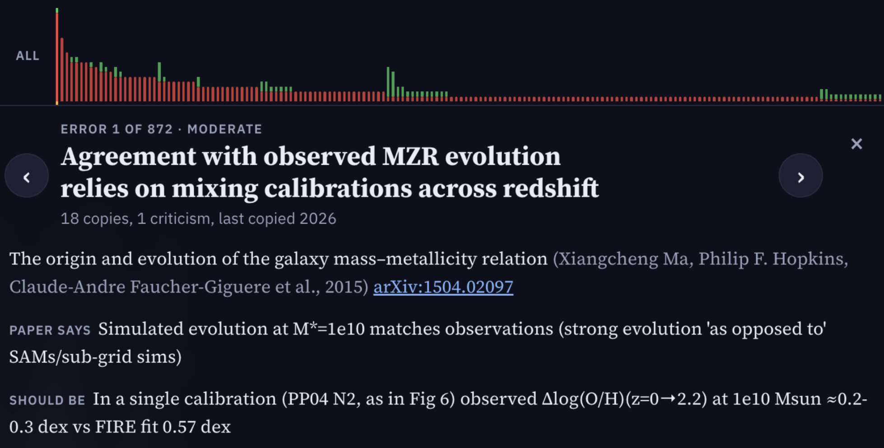
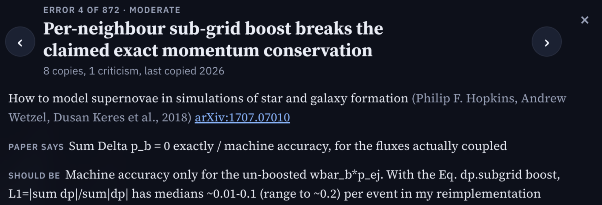
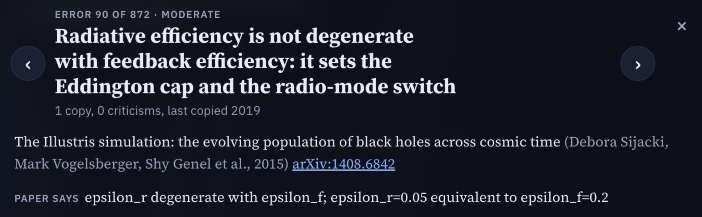

November 19, 2026

This post https://x.com/CJHandmer/status/2122609626588061816 has been making the rounds on X. The post claims to use Claude Opus 5.5 to identify 872 major errors in published astrophysics papers, described at https://science.caseyhandmer.com/physics/
The specifics of this analysis have serious issues. A lot of the "errors" identified aren't human errors at all; they're AI errors. Human experts were able to spot them quickly. These mistakes in the analysis lead to serious overstatements in the conclusion.
The goal of using AI to fix errors in scientific literature is great! But ironically, the outcome of this endeavor has been spending human time fixing AI's errors, not the other way around.
The post claims:
We indexed about 150,000 papers, audited 50,000 for issues, and did progressively more thorough checks on thousands more. We found nearly 1000 major errors that got cited many times, most are still uncorrected.
The vast majority of papers were screened for shallow criteria. Here's what the website says:

The 50,000 papers were checked for things like plagiarism, retractions, or LLM-generated content. This check found very little.
Continuing on, only 200 most-cited papers were checked in detail, plus 459 added in a subsequent pass. A deeper dive on this 659 leads to the headline finding of 872 "major errors".
I'm a computer scientist by training, but I work with astronomers as part of the NSF-Simons Institute for Cosmic Origins (@CosmicAI_Inst). I was curious to understand what Claude found here a bit more. My colleague Paul Torrey from University of Virginia is a computational astrophysicist. He took the time to look at a few of these claims for papers he was familiar with. He shared his analysis with me, which I'm reproducing here.
Regarding the first claimed error (https://arxiv.org/abs/1504.02097):

Paul's analysis of this paper was that saying "simulations match observations" is perhaps generous, but is backed up by evidence. It's not an "error", let alone a moderate one.
The "correct" claim is: (a) not a sentence, nor really a claim, and borderline not-readable and (b) overemphasizes one particular calibration (PP04) which the field generally avoids owing to known uncertainty with individual calibrations.
(Incidentally, Paul is an author on one of the "green dot" papers critiquing their claim.)
Regarding the fourth claimed error (https://arxiv.org/abs/1707.07010):

The paper presents a method for distributing an explosion's momentum to the surrounding gas. The claimed error is that momentum is not preserved exactly: an explosion yields a net push in some direction, which is not physically possible.
Paul is very familiar with this subject because he directly worked on this and ported a version of the described algorithm to another codebase. He confirmed from direct tests that it conserves momentum to machine precision, consistent with the claim made in the paper.
The AI's revised claim relies on the AI's own reimplementation of the algorithm from the paper ("per event in my reimplementation"). However, this reimplementation is not correct.
In the paper's method, each surrounding parcel of gas is attributed a share of the explosion's momentum, plus a small "boost" term. Then, a balancing step adjusts those momentum values so that, added together, they cancel exactly and the explosion produces no net push. The paper's main diagram (Figure 1) shows this method.
However, the AI implementation first does the balance step, then does the boost step. Implementing the steps in this order results in an imbalance. Put simply, the AI reconstructed the method incorrectly, measured a flaw in its own reconstruction, and attributed it to the paper. The paper's equations, read in isolation, can perhaps suggest the wrong order, but the figure resolves the question. And, most importantly, any scientist familiar with the method – or any human expert that takes time to think deeply about the problem – would have caught the conflict. Before publicly flagging this paper as containing an error and posting to the internet, a responsible human scientist would have stopped to ask: might I be the one with a misunderstanding here?
Finally, Paul checked error 90 (https://arxiv.org/pdf/1408.6842) since he's an author on that paper:

This wording is perhaps slightly overstated. The epsilon_r term impacts another part of the model as well that epsilon_f does not, so it is not completely degenerate. However, the paper's actual claim is about the feedback energy budget. The paper already acknowledges that the trade-off isn't exact, and this particular statement doesn't impact the main conclusions. An expert reader would understand "degenerate" here as a statement about feedback energy. The extra dependence might be commented on in a footnote, but is essentially a detail, not an error in the paper or its results.
Summary: Across these three cases, we have one complete miss from the AI (the AI made a mistake in reimplementation), one minor difference in interpretation, and one claim that wouldn't substantively mislead a reader when taken in context. I wouldn't expect any of these to be "corrected" in follow-up work! (These three claims were not cherry-picked; they were three that we happened to investigate due to being early in the list and ones that Paul was familiar with.)
(The idea that AI fixates on minor and often invented errors has been noticed in the context of AI reviewer agents as well; see survey results in Figure 2 of https://arxiv.org/pdf/2604.13940.)
The post claims:
Bottom line: AI can speed up quantitative science by >1000x with no further model improvement required. But I'm seeing no evidence of this being pushed within universities, only academics complaining about labs dropping math proofs.
The author seems to assume that academic researchers have their heads in the sand and are stuck in old models of writing papers filled with errors rather than adopting this new paradigm.
There are likely some researchers who behave like this. However, it strongly mischaracterizes the astronomers I've interacted with. Many of them are equally aware of coding agents as my colleagues in computer science. Paul did some preliminary work with a coding agent to scope out projects and identify datasets much as the author of this post is suggesting! Finally, I spoke to another researcher using sophisticated teams of agents with a vibe-coded visualization to debug issues with the Gemini telescope.
Moreover, the idea that universities aren't embracing AI is out of touch. At NYU (my university), the Center for Data Science has four lines to hire in AI for science. UT Austin declared 2024 the "year of AI." Beyond CosmicAI, the other NSF AI Institutes (https://www.nsf.gov/focus-areas/si/institutes) are advancing the intersection of AI and several scientific disciplines. A huge amount of grant funding is currently tied to work in AI. Academics aren't just sitting this out!
The author of this post isn't the only person engaged in this.
My PhD students have received two recent emails giving us a heads up about "errors" identified in our papers through a similar AI process. One is a minor error in a dataset potentially affecting up to 3% of the examples; while it's a real error, our human validation step already ruled out the possibility of this error affecting the final results. The other error was entirely misconstrued by the AI and is already reflected in the paper's analysis.
These criticisms of the literature's validity do two things. First, they force us to spend time addressing them, even if they're unfounded. Critique and hardening of results in the literature is good! (Michael Frank has done some excellent work here: https://x.com/mcxfrank/status/2120188287990255902.) But the false positives here make it clear that this was not a genuine effort to improve the literature. Human time is wasted debugging someone else's coding agent.
Second, since these doubts can be raised far more quickly than they can be addressed, they erode trust in the scientific enterprise. The framing of this post suggests that "academic publishing is dead", using this bag of results to question the value of the entire literature. Rethinking publication models is great! But announcing that papers are dead because they can be written by Claude, when no evidence has been provided for that claim, misses the mark. This critique is a bad faith attempt to discredit science and academic research. And, ironically, this critique of the academic literature would have been rejected by the standard academic literature peer review process, not because it's critical of academic publishing, but because it's riddled with major errors and overstatements.
Astronomy has lots of interesting questions that AI will help with, but which also need large teams of humans to figure out what questions to ask, operate telescopes, rigorously analyze data, debate and propose theories, and more. The CosmicAI Institute, our collaborators, and a host of others in the field will keep pushing towards this goal, with teams of great scientists and plenty of AI along the way. Join us: https://cosmicai.org/
Thanks to Paul Torrey, Jessy Li, and Claude-André Faucher-Giguère for comments on the post.